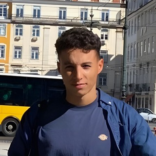

Étudiant à l'École polytechnique (X 2021) et à l'ENS Paris-Saclay (MVA), je m'intéresse au traitement automatique des langues et à la génération d'images.
Je cherche un stage pour le printemps 2025 débouchant sur une thèse, et je suis ouvert à toute opportunité d'enseigner. N'hésitez pas à me contacter !
Traitement automatique des langues, modèles de langue, génération et traitement de l'image.
Optimisation, apprentissage statistique, calcul stochastique et algorithmes.
Algorithmes en ligne pour les enchères combinatoires, avec José Correa et Andrés Cristi.
Classificateurs linéaires par morceaux basés sur la géométrie tropicale et la théorie des jeux, avec Xavier Allamigeon, Stéphane Gaubert et Théo Molfessis.
Développement d'un pilote automatique pour des robots, permettant de doubler leur vitesse.
Simulations en dynamique des populations avec Vincent Bansaye et Maxime Breden.
Programmation : C++, Python, OCaml.
Langues : Français, anglais et espagnol (courant), arabe (intermédiaire).